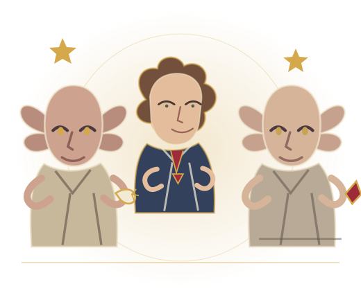

EL CÁLIZ DE FUEGO

LIBRE AL FIN · LA P.E.D.D.O.09
Elfos domésticos
Hermione funda la P.E.D.D.O.
En Hogwarts, Hermione descubre que los elfos trabajan sin sueldo ni libertad y que casi nadie ve el problema. Por eso crea la Plataforma Élfica de Defensa de los Derechos Obreros y empieza una campaña para que se los tome en serio.
La trama suma una pregunta incómoda al mundo mágico: ¿quién hace el trabajo invisible y quién se beneficia de que todo siga igual?
EN LA PELÍCULA
Dobby recibe un calcetín y la historia de los elfos queda casi fuera.
EN EL LIBROLa causa de Hermione sigue durante varios cursos y también muestra que ayudar no siempre significa escuchar a quienes querés ayudar.